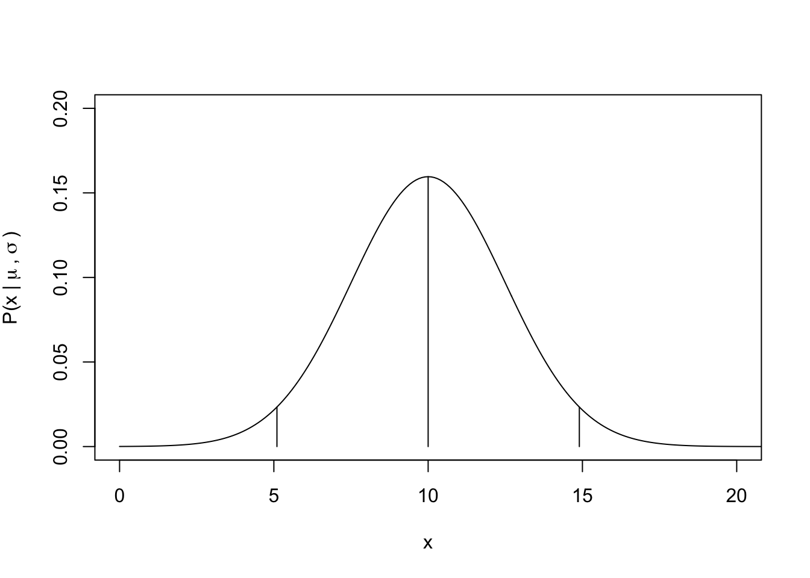
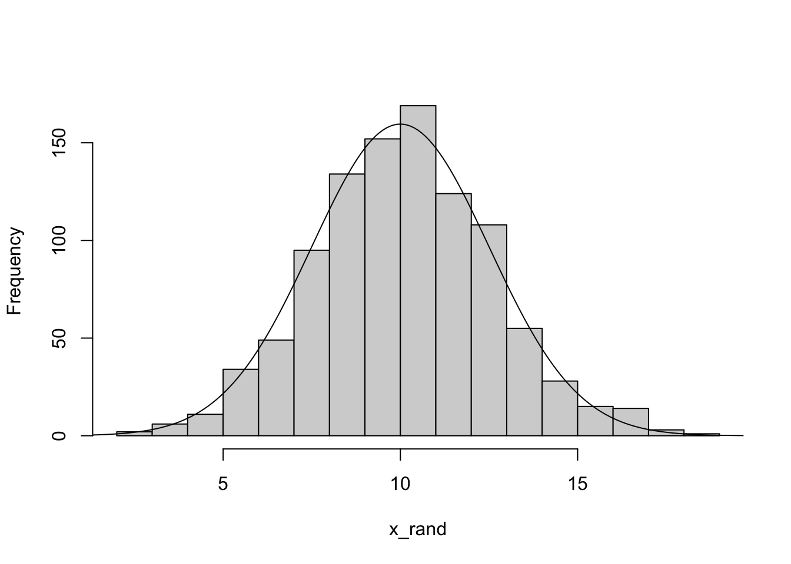
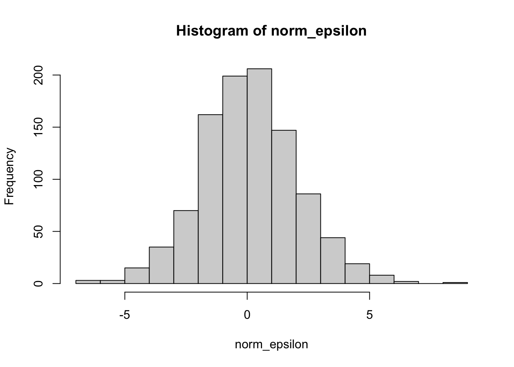
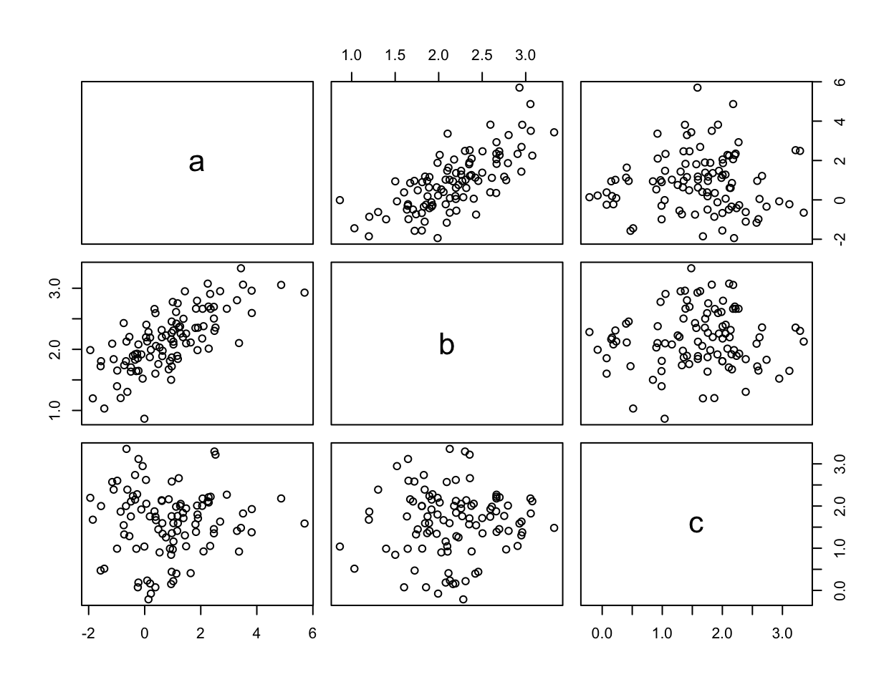
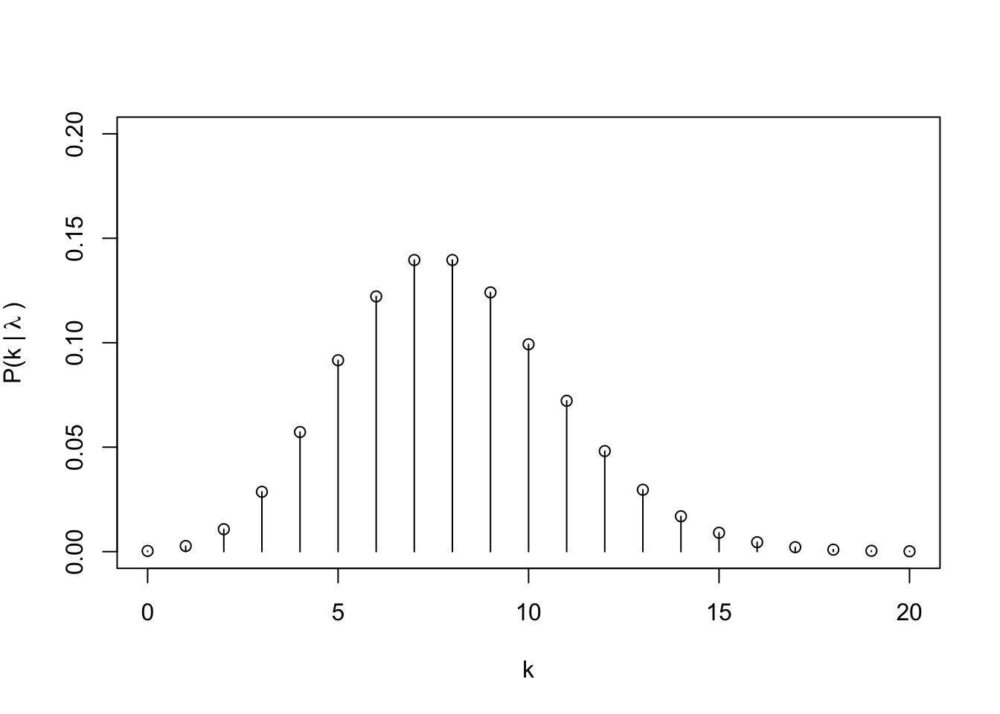
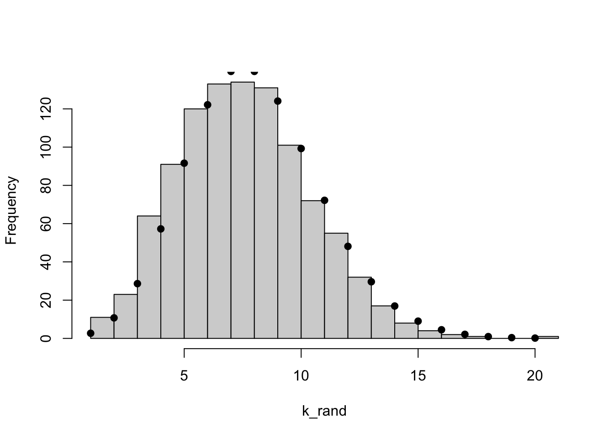

As we learned in lecture, the normal distribution is defined by two parameters, the mean \(\mu\) and the standard deviation \(\sigma\). Here, we will use the normal distribution to demonstrate some of R’s functions to describe probability distributions and to draw random numbers from probability distributions. Let’s assume that random variable \(x\) follows a normal distribution, \(x_i \sim N(\mu, \sigma)\).
# Define the parametersmu=10sigma=2.5# Visualize the probability density function (pdf)x_vals=seq(0, 50, by =0.1)norm_pdf=dnorm(x_vals, mean =mu, sd =sigma)# Let's use some of the other R functions to describe the distribution## What is the probability density of specific values?## meanp_mu=dnorm(mu, mean =mu, sd =sigma)## The next two values will describe the 95% probability density bounds## (Low) 2.5% cut off x_low95=qnorm(0.025, mean =mu, sd =sigma)p_low95=dnorm(x_low95, mean =mu, sd =sigma)## (High) 97.5% cut offx_high95=qnorm(0.975, mean =mu, sd =sigma)p_high95=dnorm(x_high95, mean =mu, sd =sigma)# So, what is the P(x <= x_high95)??pnorm(x_high95, mean =mu, sd =sigma)
[1] 0.975
## Plot the pdf with segmentsplot(x =NA, y =NA, xlim =c(0, 20), ylim =c(0, 0.2), xlab ="x", ylab =expression("P(x |"~mu~","~sigma~")"))lines(norm_pdf~x_vals)segments(x0 =c(x_low95, mu, x_high95), x1 =c(x_low95, mu, x_high95), y0 =rep(0, times =3), y1 =c(p_low95, p_mu, p_high95))# Now, let's draw random samples from this normal distributionn_rand=1000x_rand=rnorm(n_rand, mean =mu, sd =sigma)# Plot a histogram and overlay the approximate expectations## The line below assumes you draw 'n_rand' sampleshist(x_rand, breaks =20, main ="")lines(norm_pdf*n_rand~x_vals)


3.2 Multivariate normal distribution
3.2.1 Relation to residuals, \(\epsilon\)
Recall our linear model in matrix notation: \(Y = XB + \epsilon\). We use the multivariate normal distribution to describe the probability density of the residuals, \(\epsilon\). Recall that each individual residual, \(\epsilon_i\) follows a normal distribution with mean zero and standard deviation equal to the residual error, \(\sigma\): \(\epsilon_i \sim N(0, \sigma)\). Also recall that the linear regression analysis assumes that \(\epsilon_i\) are I.I.D. (independent and identically distributed). \(\epsilon_i \sim N(0, \sigma)\) implies the identical distribution (i.e., each residual follows the same normal distribution). The “independent” part means that the residual values are not correlated in any way, meaning that they do not covariance is zero. Thus, we can use vector notation to say that the vector \(\epsilon\) follows a multivariate normal distribution with all means equal to zero and covariance matrix \(\Sigma = \sigma^2 I\), where \(I\) is a square identity matrix: \(\epsilon \sim N(0, \sigma^2 I)\). More about covariance and covariance matrices is available below (Footnotes 3.4.1).
The multivariate normal probability distribution is hard to visualize, because it is in multiple dimensions. But we can use similar R functions to understand the distribution. These functions are not in the base installation of R, so we need another package, MASS. We’ll also need the Matrix package later.
# Install packages if you don't already have them, e.g., # install.packages("MASS", dependencies = TRUE)library(MASS)library(Matrix)
Warning: package 'Matrix' was built under R version 4.3.1
# Define mean and st.dev.mu_epsilon=0sigma_epsilon=2.0# sample sizen_resid=1000# we need a vector of meansmu_vec=rep(0, n_resid)# we need an identity matrixI_mat=matrix(0, nrow =n_resid, ncol =n_resid)## specify the diagonal = 1diag(I_mat)=1# Draw randomly from the multivariate normalmvn_epsilon=MASS::mvrnorm(n =1, mu =mu_vec, Sigma =sigma_epsilon^2*I_mat)# We can see that an entire array of size n_resid is drawnstr(mvn_epsilon)
num [1:1000] 4.106 2.124 2.305 1.28 -0.331 ...
# How does this compare to drawing them independently?norm_epsilon=rnorm(n_resid, mean =mu_epsilon, sd =sigma_epsilon)c(mean(mvn_epsilon), mean(norm_epsilon))
# Compare these two vectors visually:hist(mvn_epsilon)hist(norm_epsilon)

3.2.2 Multivariate normal distribution with non-independent variables
Let’s explore the multivariate normal a bit more. Suppose we have three random variates \(a\), \(b\), and \(c\). Suppose further that \(a\) and \(b\) are positively correlated with each other, but \(c\) is not correlated with either other variate.
# Establish means and variances of a, b, and cmu_vec=c(1.0, 2.2, 1.5)sd_vec=c(1.5, 0.5, 0.75)# Manually construct the covariance matrix:cov_mat_test=matrix( data =c(0.0, 0.6, 0.0,0.6, 0.0, 0.0,0.0, 0.0, 0.0), ncol =3, nrow =3, byrow =TRUE)diag(cov_mat_test)=sd_vec^2# Matrix must be positive definite (PD). # This gives closest PDcov_mat=Matrix::nearPD(cov_mat_test)$mat# Look if you want: str(cov_mat)# Draw some random vectors:abc_array=mvrnorm(n =100, mu =mu_vec, Sigma =cov_mat)# Look at structure if you want; str(abc_array)# Visualize the relationships between a, b, and c:colnames(abc_array)=letters[1:3]pairs(abc_array)

3.3 Poisson distribution
The normal and multivariate normal probability distributions have PDFs related to continuous random variables. In many cases our data are not continuous, but are instead discrete. The Poisson distribution represents the PMF (probability mass function) of count data and is described by a single parameter, \(\lambda\), which is equal to the mean and variance of the distribution. In regression, we can use the Poisson distribution to analyze a generalized linear model between a discrete response variable (e.g., count data) and its covariates, but we will not deal with that in our class.
# Define the parameterlambda=8# Visualize the probability density function (pdf)## Remember this is a discrete distributionk_vals=c(0:20)pois_pdf=dpois(k_vals, lambda =lambda)plot(x =NA, y =NA, xlim =c(0, 20), ylim =c(0, 0.2), xlab ="k", ylab =expression("P(k |"~lambda~")"))points(pois_pdf~k_vals)segments(x0 =k_vals, x1 =k_vals, y0 =0, y1 =pois_pdf)## Compare to randomly drawn values:k_rand=rpois(n_rand, lambda =lambda)hist(k_rand, breaks =25, main ="")points(pois_pdf*n_rand~k_vals, pch =19)# On your own, use the ppois() and qpois() functions to understand their inputs/outputs


3.4 Footnotes
3.4.1 Covariance matrix
As reminder, the variance of a random variable, \(x\), with sample size \(n\) is: \[\sigma^2_x = \frac{1}{n-1} \sum_i^n (x_i - \bar{x})(x_i - \bar{x}) = \frac{1}{n-1} \sum_i^n (x_i - \bar{x})^2.\] And \(\bar{x}\) is the sample mean. Similarly, then, the covariance of samples from two random variables, \(x\) and \(y\), can be calculated as: \[\sigma(x,y) = \frac{1}{n-1} \sum_i^n (x_i - \bar{x})(y_i - \bar{y}).\] The syntax for the covariance of a sample population with itself is, for example, \(\sigma(x, x)\), which is simply equal to the variance \(\sigma_x^2\). The covariance matrix for these two sample populations would be: \[C = \begin{bmatrix}
\sigma(x,x) & \sigma(x,y)\\
\sigma(y,x) & \sigma(y,y)
\end{bmatrix}.\] This can be simplified using the variance notation: \[C = \begin{bmatrix}
\sigma^2_x & \sigma(x,y)\\
\sigma(y,x) & \sigma^2_y
\end{bmatrix}.\]
Source Code
# Probability Distributions {#sec-prob}## Gaussian (Normal) distributionAs we learned in lecture, the normal distribution is defined by two parameters, the mean $\mu$ and the standard deviation $\sigma$. Here, we will use the normal distribution to demonstrate some of R's functions to describe probability distributions and to draw random numbers from probability distributions. Let's assume that random variable $x$ follows a normal distribution, $x_i \sim N(\mu, \sigma)$.```{r}# Define the parametersmu =10sigma =2.5# Visualize the probability density function (pdf)x_vals =seq(0, 50, by =0.1)norm_pdf =dnorm(x_vals, mean = mu, sd = sigma)# Let's use some of the other R functions to describe the distribution## What is the probability density of specific values?## meanp_mu =dnorm(mu, mean = mu, sd = sigma)## The next two values will describe the 95% probability density bounds## (Low) 2.5% cut off x_low95 =qnorm(0.025, mean = mu, sd = sigma)p_low95 =dnorm(x_low95, mean = mu, sd = sigma)## (High) 97.5% cut offx_high95 =qnorm(0.975, mean = mu, sd = sigma)p_high95 =dnorm(x_high95, mean = mu, sd = sigma)# So, what is the P(x <= x_high95)??pnorm(x_high95, mean = mu, sd = sigma)``````{r}#| layout-ncol: 2## Plot the pdf with segmentsplot(x =NA, y =NA, xlim =c(0, 20), ylim =c(0, 0.2),xlab ="x", ylab =expression("P(x |"~mu~","~sigma~")"))lines(norm_pdf ~ x_vals)segments(x0 =c(x_low95, mu, x_high95), x1 =c(x_low95, mu, x_high95),y0 =rep(0, times =3), y1 =c(p_low95, p_mu, p_high95))# Now, let's draw random samples from this normal distributionn_rand =1000x_rand =rnorm(n_rand, mean = mu, sd = sigma)# Plot a histogram and overlay the approximate expectations## The line below assumes you draw 'n_rand' sampleshist(x_rand, breaks =20, main ="")lines(norm_pdf*n_rand ~ x_vals)```## Multivariate normal distribution### Relation to residuals, $\epsilon$Recall our linear model in matrix notation: $Y = XB + \epsilon$. We use the multivariate normal distribution to describe the probability density of the residuals, $\epsilon$. Recall that each individual residual, $\epsilon_i$ follows a normal distribution with mean zero and standard deviation equal to the residual error, $\sigma$: $\epsilon_i \sim N(0, \sigma)$. Also recall that the linear regression analysis assumes that $\epsilon_i$ are I.I.D. (independent and identically distributed). $\epsilon_i \sim N(0, \sigma)$ implies the identical distribution (i.e., each residual follows the same normal distribution). The "independent" part means that the residual values are not correlated in any way, meaning that they do not covariance is zero. Thus, we can use vector notation to say that the vector $\epsilon$ follows a multivariate normal distribution with all means equal to zero and covariance matrix $\Sigma = \sigma^2 I$, where $I$ is a square identity matrix: $\epsilon \sim N(0, \sigma^2 I)$. More about covariance and covariance matrices is available below ([Footnotes -@sec-covariance]).The multivariate normal probability distribution is hard to visualize, because it is in multiple dimensions. But we can use similar R functions to understand the distribution. These functions are not in the base installation of R, so we need another package, `MASS`. We'll also need the `Matrix` package later.```{r}# Install packages if you don't already have them, e.g., # install.packages("MASS", dependencies = TRUE)library(MASS)library(Matrix)# Define mean and st.dev.mu_epsilon =0sigma_epsilon =2.0# sample sizen_resid =1000# we need a vector of meansmu_vec =rep(0, n_resid)# we need an identity matrixI_mat =matrix(0, nrow = n_resid, ncol = n_resid)## specify the diagonal = 1diag(I_mat) =1# Draw randomly from the multivariate normalmvn_epsilon = MASS::mvrnorm(n =1, mu = mu_vec,Sigma = sigma_epsilon^2*I_mat)# We can see that an entire array of size n_resid is drawnstr(mvn_epsilon)# How does this compare to drawing them independently?norm_epsilon =rnorm(n_resid, mean = mu_epsilon, sd = sigma_epsilon)c(mean(mvn_epsilon), mean(norm_epsilon))c(sd(mvn_epsilon), sd(norm_epsilon))``````{r}#| layout-ncol: 2# Compare these two vectors visually:hist(mvn_epsilon)hist(norm_epsilon)```### Multivariate normal distribution with non-independent variablesLet's explore the multivariate normal a bit more. Suppose we have three random variates $a$, $b$, and $c$. Suppose further that $a$ and $b$ are positively correlated with each other, but $c$ is not correlated with either other variate.```{r}#| fig-width: 6.5#| fig-height: 5# Establish means and variances of a, b, and cmu_vec =c(1.0, 2.2, 1.5)sd_vec =c(1.5, 0.5, 0.75)# Manually construct the covariance matrix:cov_mat_test =matrix(data =c(0.0, 0.6, 0.0,0.6, 0.0, 0.0,0.0, 0.0, 0.0),ncol =3, nrow =3,byrow =TRUE)diag(cov_mat_test) = sd_vec^2# Matrix must be positive definite (PD). # This gives closest PDcov_mat = Matrix::nearPD(cov_mat_test)$mat# Look if you want: str(cov_mat)# Draw some random vectors:abc_array =mvrnorm(n =100, mu = mu_vec, Sigma = cov_mat)# Look at structure if you want; str(abc_array)# Visualize the relationships between a, b, and c:colnames(abc_array) = letters[1:3]pairs(abc_array)```## Poisson distributionThe normal and multivariate normal probability distributions have PDFs related to *continuous* random variables. In many cases our data are not continuous, but are instead *discrete*. The Poisson distribution represents the PMF (probability *mass* function) of count data and is described by a single parameter, $\lambda$, which is equal to the mean and variance of the distribution. In regression, we can use the Poisson distribution to analyze a generalized linear model between a discrete response variable (e.g., count data) and its covariates, but we will not deal with that in our class.```{r}#| layout-ncol: 2# Define the parameterlambda =8# Visualize the probability density function (pdf)## Remember this is a discrete distributionk_vals =c(0:20)pois_pdf =dpois(k_vals, lambda = lambda)plot(x =NA, y =NA, xlim =c(0, 20), ylim =c(0, 0.2),xlab ="k", ylab =expression("P(k |"~lambda~")"))points(pois_pdf ~ k_vals)segments(x0 = k_vals, x1 = k_vals,y0 =0, y1 = pois_pdf)## Compare to randomly drawn values:k_rand =rpois(n_rand, lambda = lambda)hist(k_rand, breaks =25, main ="")points(pois_pdf*n_rand ~ k_vals, pch =19)# On your own, use the ppois() and qpois() functions to understand their inputs/outputs```## Footnotes### Covariance matrix {#sec-covariance}As reminder, the variance of a random variable, $x$, with sample size $n$ is: $$\sigma^2_x = \frac{1}{n-1} \sum_i^n (x_i - \bar{x})(x_i - \bar{x}) = \frac{1}{n-1} \sum_i^n (x_i - \bar{x})^2.$$ And $\bar{x}$ is the sample mean. Similarly, then, the covariance of samples from two random variables, $x$ and $y$, can be calculated as: $$\sigma(x,y) = \frac{1}{n-1} \sum_i^n (x_i - \bar{x})(y_i - \bar{y}).$$ The syntax for the covariance of a sample population with itself is, for example, $\sigma(x, x)$, which is simply equal to the variance $\sigma_x^2$. The covariance matrix for these two sample populations would be: $$C = \begin{bmatrix}\sigma(x,x) & \sigma(x,y)\\\sigma(y,x) & \sigma(y,y)\end{bmatrix}.$$ This can be simplified using the variance notation: $$C = \begin{bmatrix}\sigma^2_x & \sigma(x,y)\\\sigma(y,x) & \sigma^2_y\end{bmatrix}.$$